Art direction for Saint Cyr's, a new age art market.
A concept campaign on Pharrell and his roots.
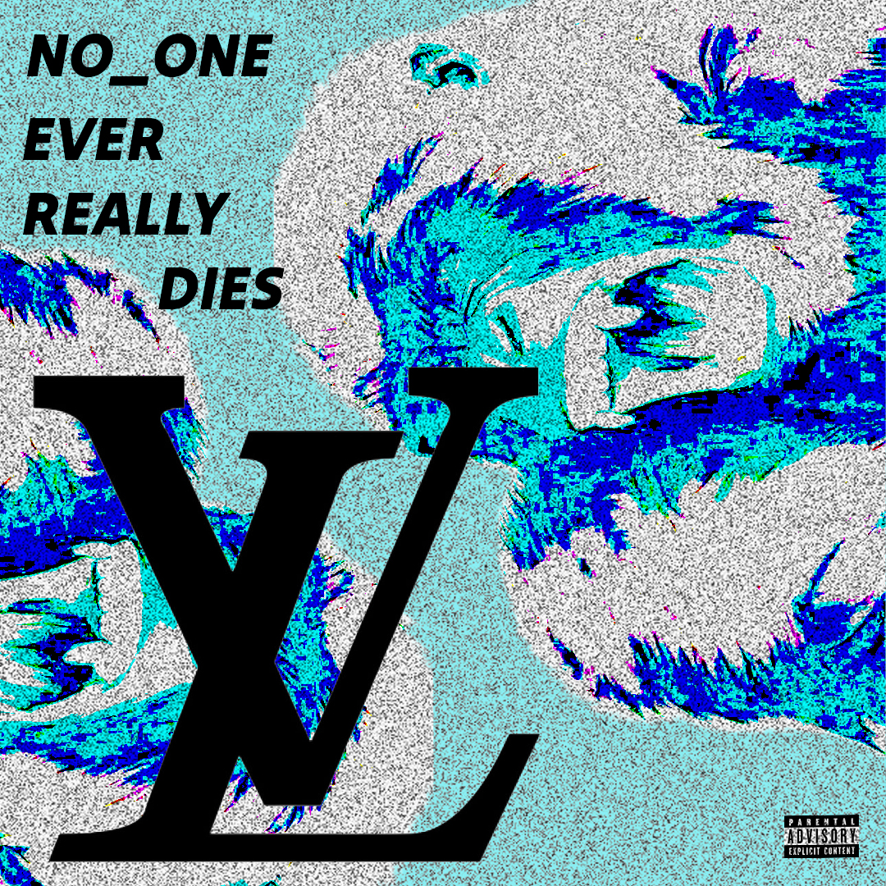
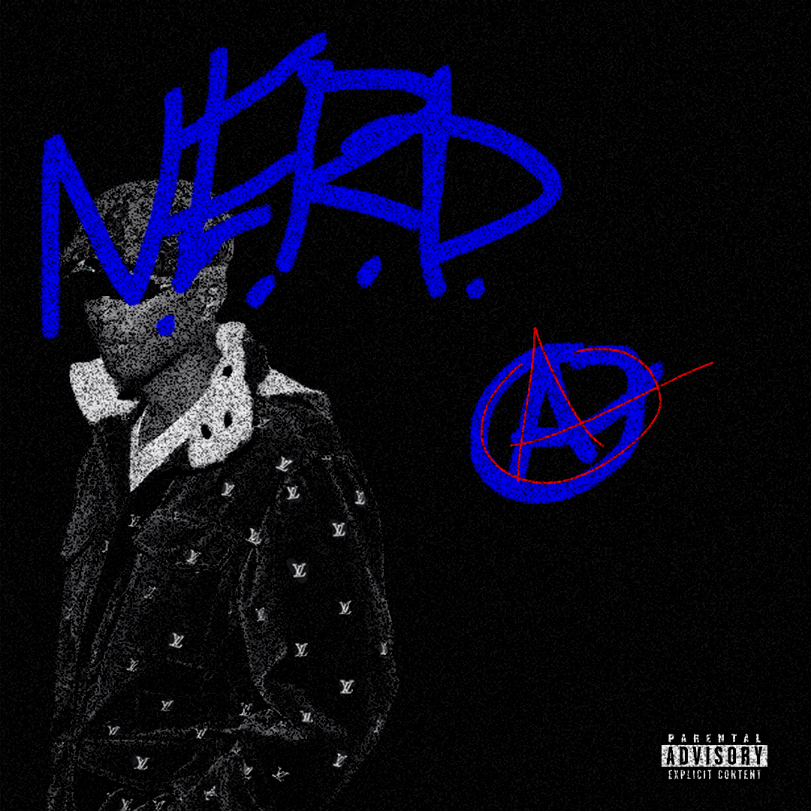
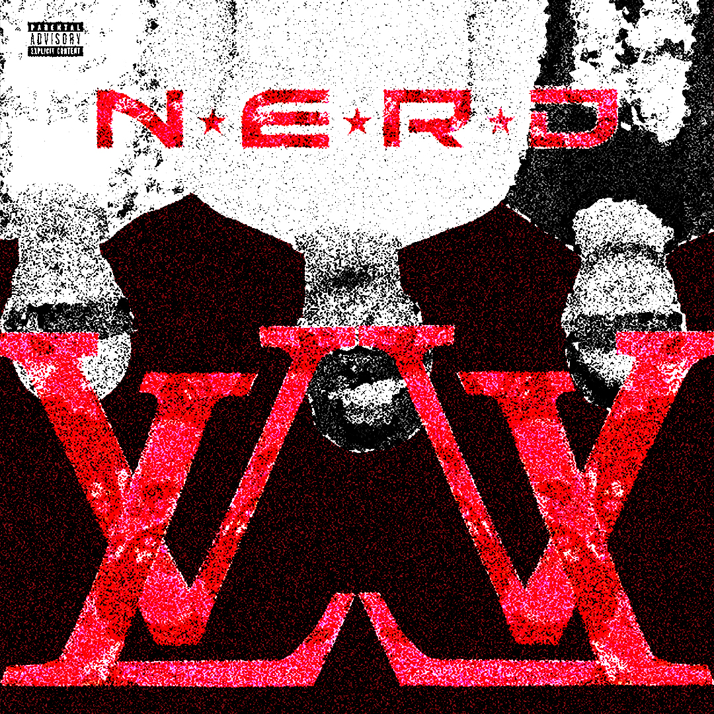
Spec work.
Right: Jean-Michel Basquiat photographed in Paris by Jérôme Schlomoff, 1988.
Four record designs working the same posterisation logic as the poster series.
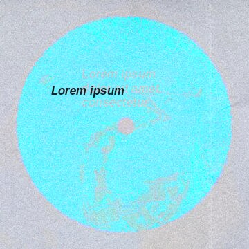
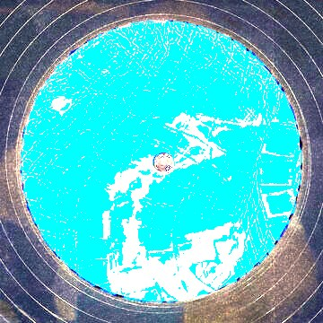
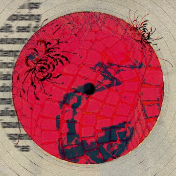
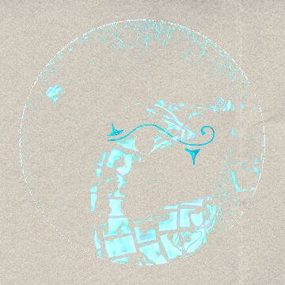
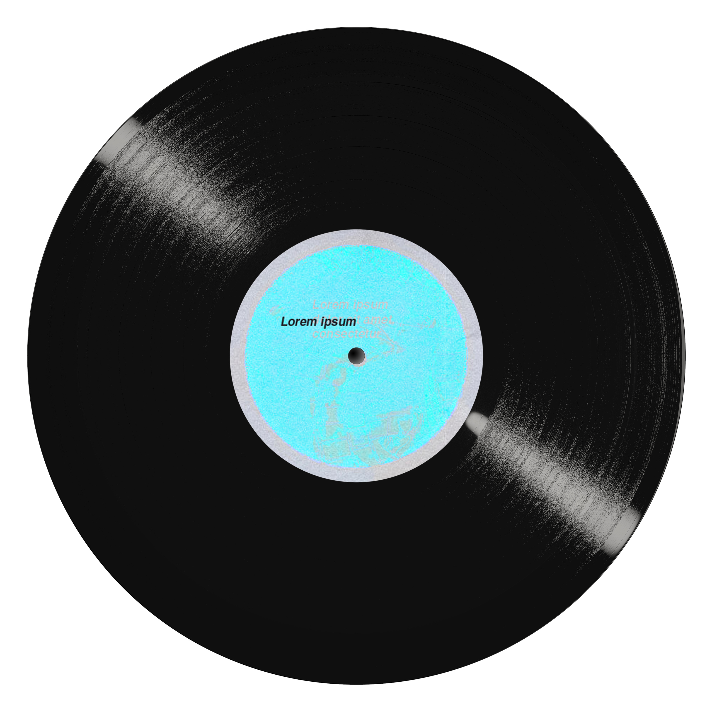
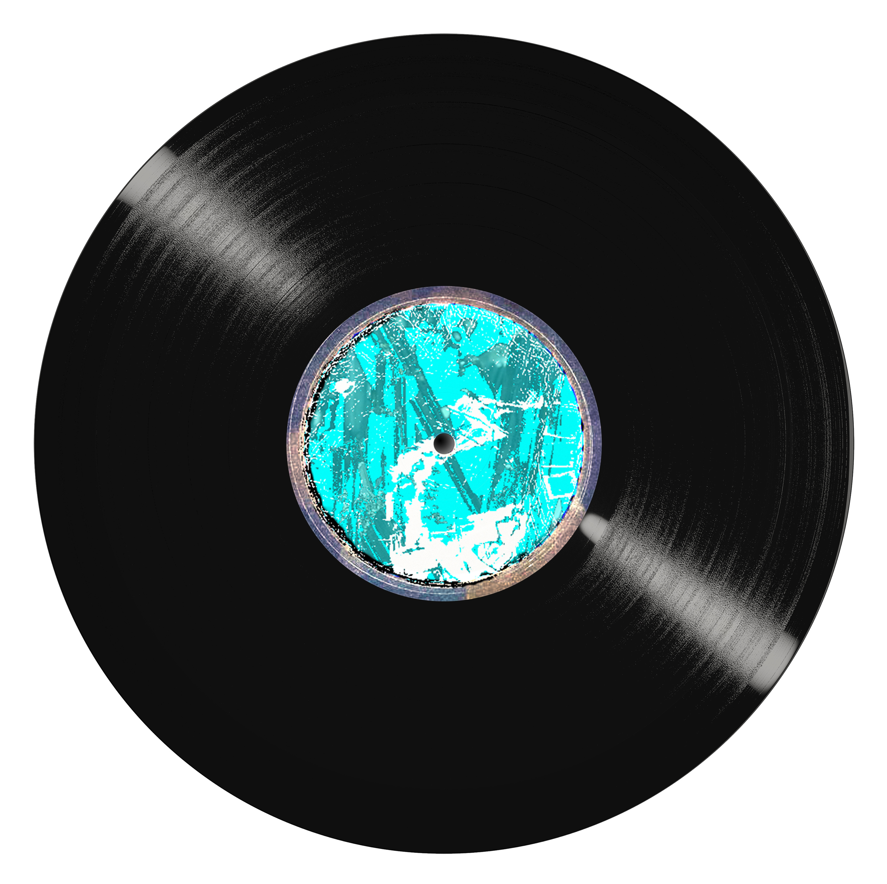
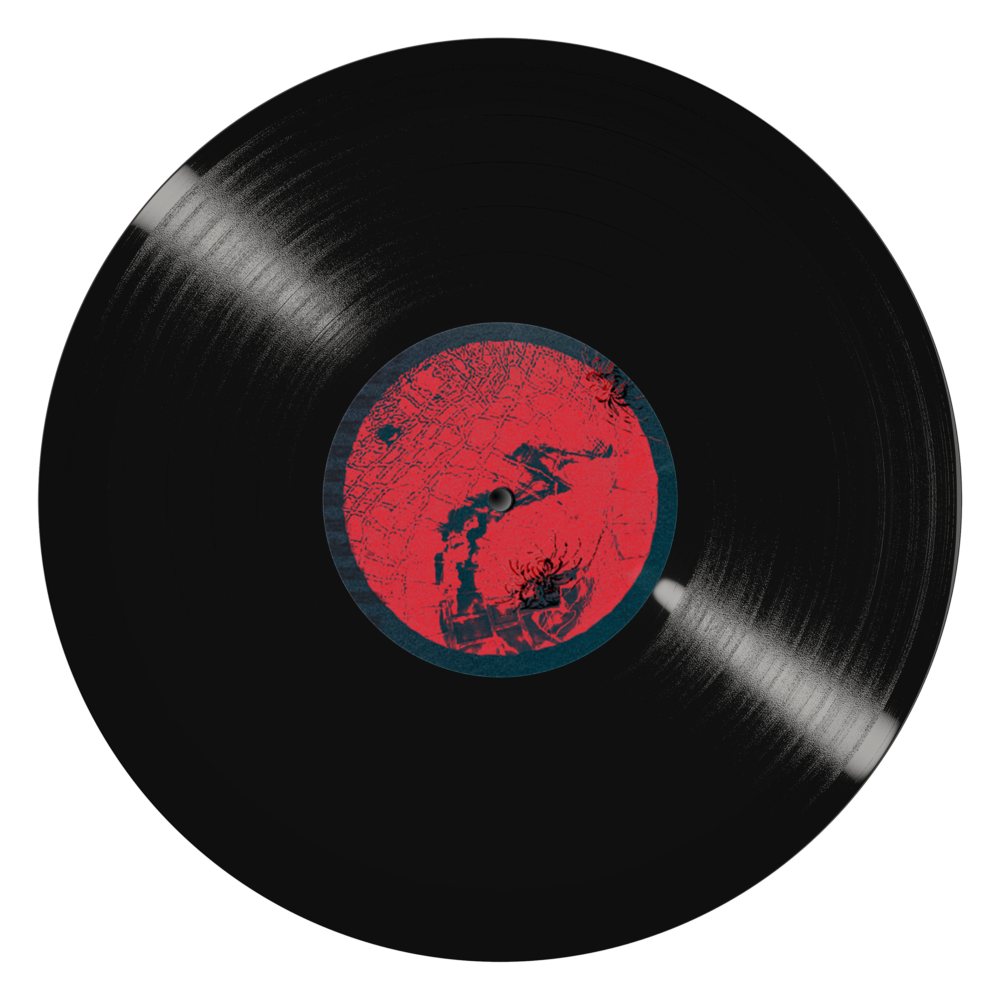
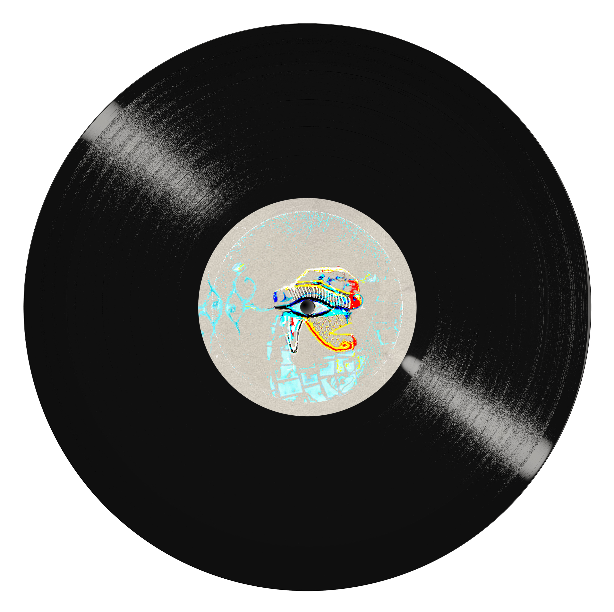
Label copy as texture rather than as information, after the anonymous white-label pressing.
Four of a series.
Made in After Effects, playing around with motion design.
Made in After Effects.
Spec work.
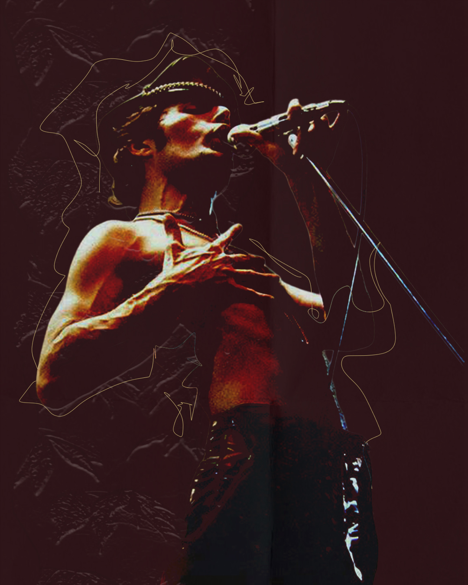
I couldn't find a credit for the source photograph.
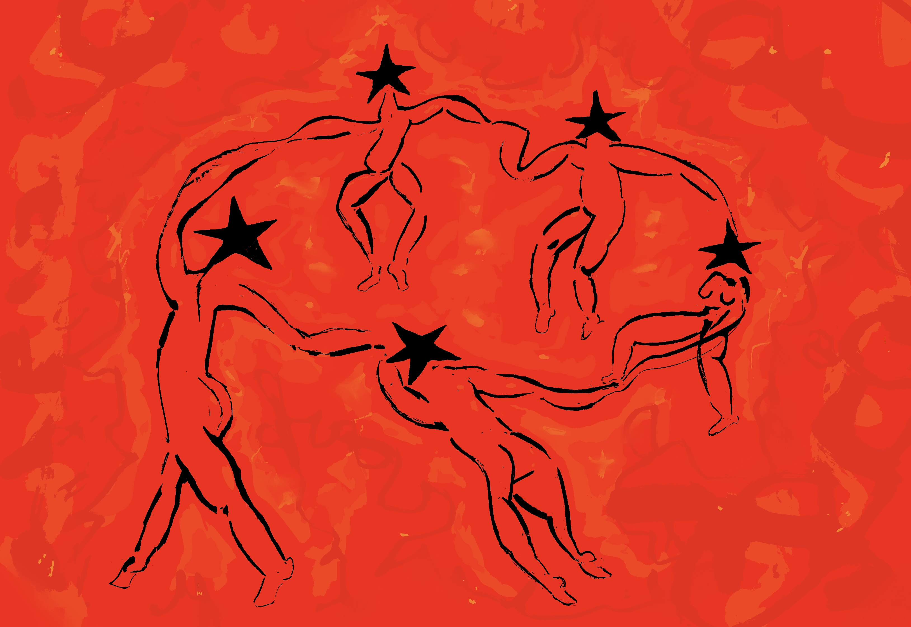
After Henri Matisse, Dance, 1910.